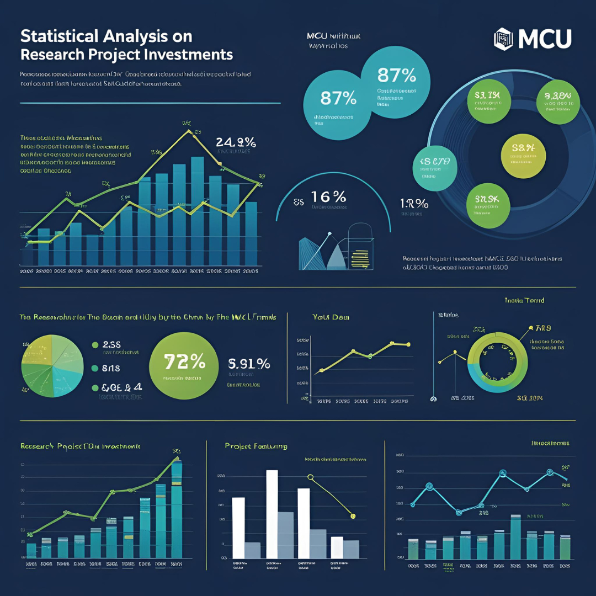

Projects

TTC Delay Analytics and Prediction
UofT SDSS Datathon — 1st Winner (Best Overall) | Mar 2025
- Evaluated 10 datasets (150k+ entries) of Subway, Streetcar and Bus delay data using Python (Pandas, NumPy) and achieved over 99% accuracy on lateness prediction.
- Collaborated with Data Scientists and UI/UX Designer to integrate PowerBI and Figma for interactive dashboard design with 50+ dynamic filtering.
- Won Best Overall Project out of 100 students in consideration of Visualization, Modeling, and Business Insights.

Piano Gesture Corrector
Computer vision-based system to help piano players improve hand posture and technique | Apr 2021 – Oct 2021
- Developed a computer vision pipeline using OpenCV and MediaPipe to recognize real-time piano hand gestures via 21-point hand landmark extraction, improving gesture detection accuracy by 65%.
- Enhanced player gesture stability by 40% through 10+ iterative 3D-printed designs and integrated Arduino-based feedback mechanisms.
- Awarded 3rd Prize out of 15,000+ students in both the Shanghai Youth Science and Technology Innovation Competition and the Shanghai Future Science Star.

Car Evaluation Prediction ML Model
XGBoost Classifier on UCI Machine Learning Repository dataset | Feb 2025
- Achieved 98% data completeness by handling missing values and applying label encoding via Pandas and NumPy.
- Trained an XGBoost classifier with 98.92% accuracy using hyperparameter tuning via GridSearchCV.
- Visualized feature importance using Matplotlib via bar charts highlighting top predictors for car acceptability.

Statistical Analysis on Research Project Investments
20-year dataset (2004–2024) from the Ministry of Colleges and Universities | Mar 2024 – Apr 2024
- Implemented RStudio for data cleaning, wrangling, statistical analysis (bootstrap, clustering, cross-validation, logistic regression, random forest), and data visualization (ggplot) on a dataset with 5000+ entries.
- Conducted A/B testing from different approaches, recommending Govt of Ontario to diversify research investment.